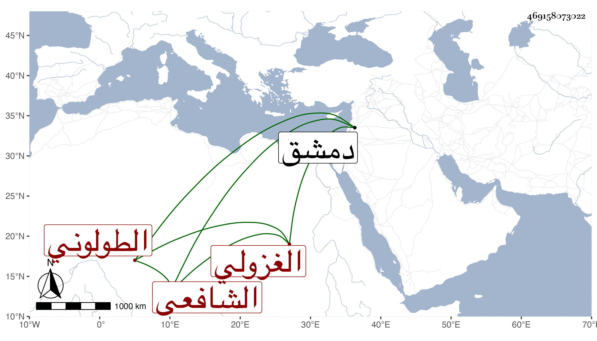

0902Sakhawi.DawLamic.ITO20230111-ara1.EIS1600.469158073022
Biography ID: 469158073022
أحمد بن أبي بكر بن عبد الله بن أيوب جلال الدين أبو الفضل الطولوني الغزولي الشافعي الآتي أبوه ويعرف بابن أخي الريس . حفظ القرآن وغيره وأخذ عن الشرف السبكي في الفقه وغيره وتلقى عن عمه الشمس محمد بن الجمال عبد الله الآتي الرياسة وسائر وظائفه بالجامع الطولوني بل باشر النقابة عند الونائي في ولايته الثالثة لدمشق وكان سمسارا في الغزل ذا حظ تام فيها بحيث لا يدانيه في قبول كلمة عند البائع والمشرتي غيره مع خير وكرم ، وقد روى عنه البقاعي مناما في ترجمة شيخه السبكي ووثقه مع طعنه في شهادة شيخ الناس العز عبد السلام البغدادي . مات سنة أربع وسبعين .
